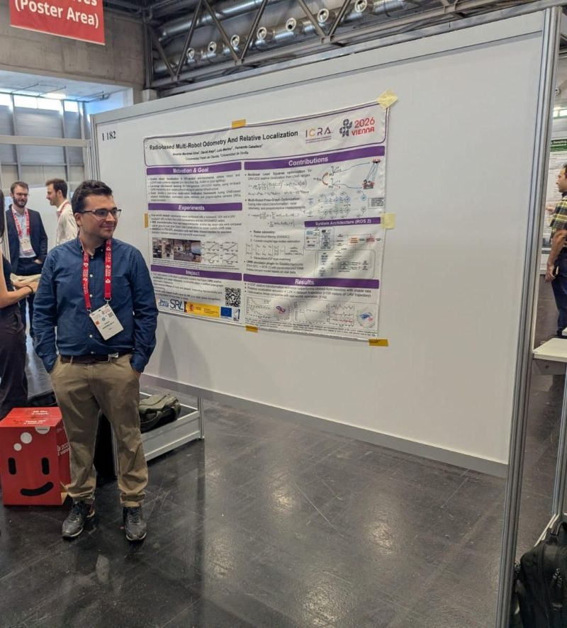

What I work on
My work sits where estimation, control and simulation meet: algorithms that run on real robots, and the tools to test them safely first.
State estimation and sensor fusion
Relative localization for drone and ground-robot teams, fusing UWB, radar, IMU and wheel odometry with factor graphs.
Control and guidance
From UAV guidance and autonomous landing to model-based control of robot actuators.
- Vision-based autonomous landing DELOREAN (H2020). Flew in the project's public demo with Correos and landed reliably in strong wind. ROBOT2022 paper
- Haru social robot control stack Lead maintainer for a Honda Research Institute Japan project: system identification, PID and MPC, 4 releases in 4 months.
- 5D guidance for U-space Time-constrained guidance for unmanned aircraft in a joint Airbus–CATEC research unit.
Robotics simulation
Simulators and Software-in-the-Loop pipelines that make field work faster and safer.
- UWBPX4Sim Realistic UWB simulation for PX4 drone and rover fleets in Gazebo, with LOS/NLOS noise models. Presented at ICRA 2026 and ROSCon Spain 2026. Repository
- HuNavSim for Webots Plugin that brings simulated pedestrians into Webots for human-aware navigation. Repository
Publications and talks
- Radio-based Multi-Robot Odometry and Relative Localization A. Martínez-Silva, D. Alejo, L. Merino, F. Caballero. IEEE ICRA 2026. arXiv
- UWBPX4Sim: Ultra-Wideband simulator for multi-robot applications A. Martínez-Silva et al. ICRA 2026 Workshop on Robot Meets GNSS and Ranging, Vienna. Also a talk at ROSCon Spain 2026, Valencia.
- Autonomous Landing Strategy for Vertiports: A Preliminary Case Study A. Martínez, P. J. Sánchez-Cuevas, M. A. Trujillo, A. Viguria. ROBOT2022, Springer. DOI
- HuNavSim 2.0: An Enhanced Human Navigation Simulator for Human-Aware Robot Navigation M. Escudero-Jiménez, N. Pérez-Higueras, A. Martínez-Silva, F. Caballero, L. Merino. ROBOT 2025, Springer. DOI

Experience
- 2025 – 2026 Research Engineer, Service Robotics Lab, Universidad Pablo de Olavide Multi-robot UWB and radar localization; Haru social robot software and control.
- 2022 – 2024 R&D Engineer, Autonomous Systems Unit, FADA-CATEC UAV landing, guidance and tooling in DELOREAN, AGORA and AERIAL-CORE.
- 2023 – 2025 MEng in Robotics, Graphics and Computer Vision, Universidad de Zaragoza Thesis on radio-based multi-robot odometry and localization.
- 2015 – 2022 BEng and MSc in Robotics and Automation, Universidad de Sevilla Master's thesis on autonomous landing for vertiports (10/10).